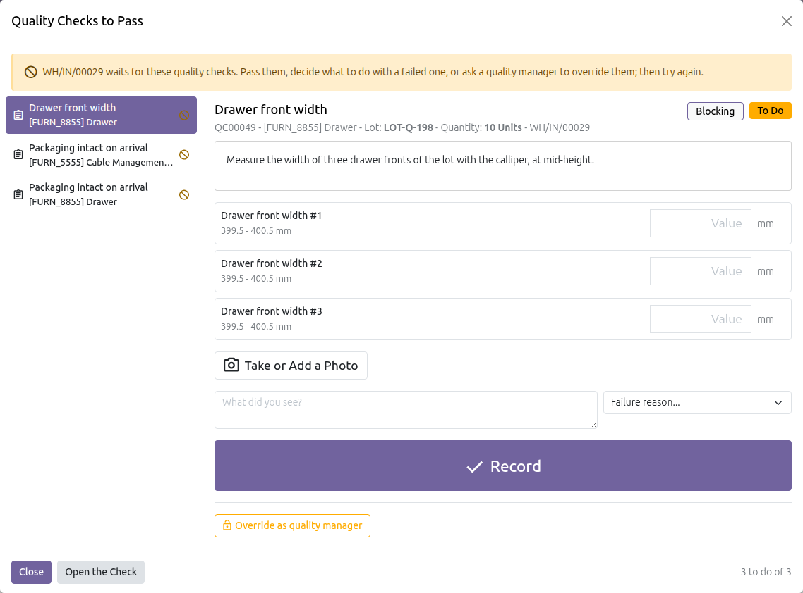
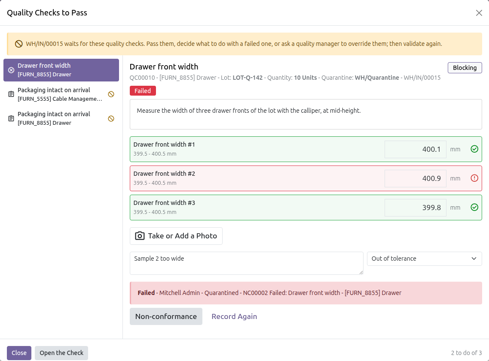
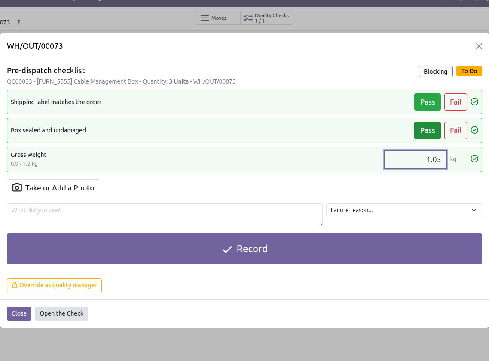
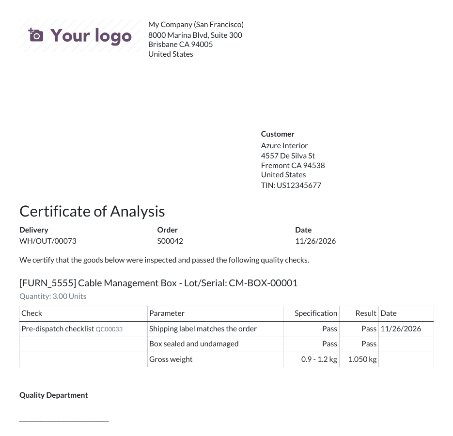
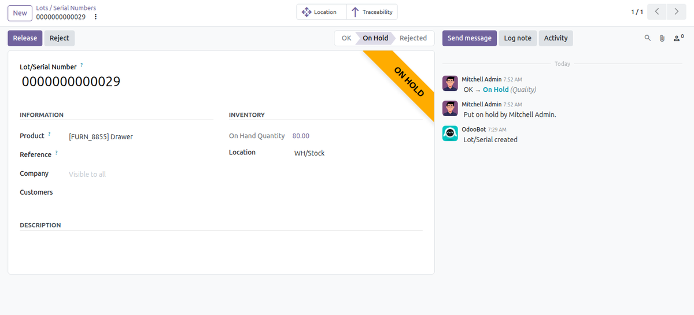
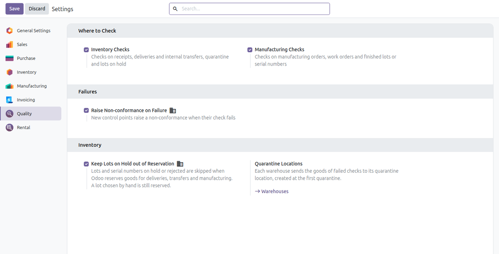

Email: odoomates@gmail.com
Quality checks on receipts, deliveries and internal transfers: validation waits for the blocking checks, failed goods go to quarantine, and lots on hold stay out of reservation.






Your rating helps others find it; your requests and pull requests decide what comes next.
★ Rate us on Odoo Apps💡 Request a feature🐛 Report an issue★ Star us on GitHub